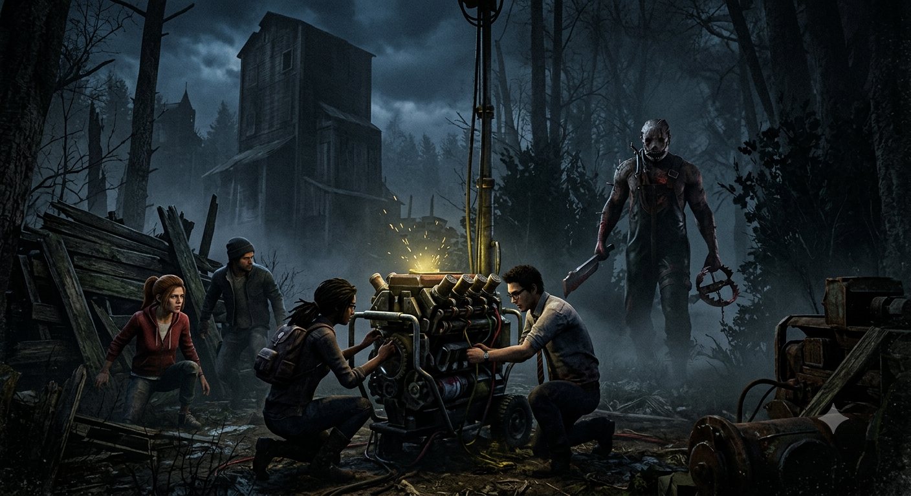

Meu primeiro post
Por: Gabriel Rodrigues
Boas-vindas ao meu novo blog! Aqui vou compartilhar fatos, curiosidades e dicas sobre o famoso jogo de terror online Dead by Daylight.

Por: Gabriel Rodrigues
Boas-vindas ao meu novo blog! Aqui vou compartilhar fatos, curiosidades e dicas sobre o famoso jogo de terror online Dead by Daylight.